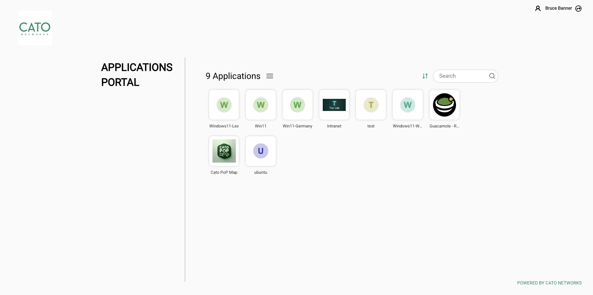
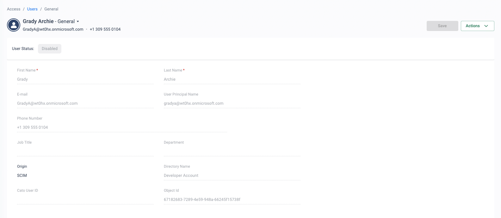
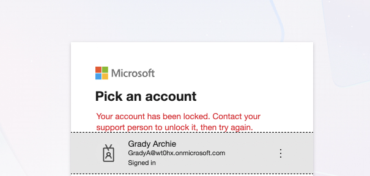

Why this matters
Third-party and supply-chain access is one of the most exploited paths into the enterprise. The people who need access — IT providers, debt-collection agencies, logistics partners, offshore developers — are exactly the users the business controls least: unmanaged devices, unknown security posture, credentials that outlive the contract.
The objective is simple to state and hard to do with legacy tooling: give every third party access to exactly what they need, nothing more, and prove it.
Impact of 3rd-party supply-chain breaches
High-profile organisations have been breached through supplier and third-party access — recent examples worth naming in the room:
Jaguar Land Rover 2025
Compromised credentials allowed access to an internal Jira server, which was exploited and PII leaked. Huge reputational damage and an estimated £2B cost to the UK economy.
Truist Bank 2024
A third-party debt-collection agency was breached — and that agency had access to sensitive Truist data. PII of nearly 4.2 million people leaked; lawsuits, reputational damage, and an estimated $400–600M in damages.
Marks & Spencer 2025
Compromised credentials from a contractor IT provider. The online store was down for nearly two months — losses up to £300M and a £1B drop in market valuation.
Why legacy 3rd-party access fails
Legacy VPN
- Designed for connectivity, not security
- Overly permissive — built on implicit trust
- No segmentation → free lateral movement once inside
- No visibility of what third parties actually do
- Compromised credentials unlock the whole network
On-premise appliances
- Constant maintenance, patching and management
- Extra appliances needed to bolt on security
- Scalability challenges as third-party count grows
- No consistent security across regions and entities
- Increases both time and cost per onboarded supplier
“How many third parties can reach more than the one application they were onboarded for — and how would you know if one of their accounts was compromised today?”
Removing risk through least-privileged access
Cato enforces a consistent, identity-driven policy on every user, everywhere. Access decisions combine who the user is (IdP identity and group) with the state of their device (posture profile: EPP/EDR running, disk encryption, OS version, client version…), continuously verified throughout the session — not just at login.
Zero trust: trust but verify — continuously
Consistent policy for users everywhere
Identity-driven and globally enforced from every PoP — no backhauling to a single VPN appliance, no regional policy drift.
Access control with device posture
Posture profiles (EPP/EDR present, encryption, OS patch level) gate access before and during every session.
Threat prevention on every flow
FWaaS, SWG, IPS and anti-malware inspect third-party traffic the same as employee traffic — nothing rides in unexamined.
Sensitive data protection
DLP and risk-based application controls (CASB) stop contractors exfiltrating data to personal cloud apps.
How to run the demo
Open with discovery: why are they looking at third-party access security now? Which suppliers, which applications, what triggered it (audit, incident, renewal)? Anchor the demo to their answer.
-
Set the scene with the business impact
Walk the breach examples above — pick the one closest to the prospect's industry. Then contrast with how their third parties connect today (usually VPN + jump hosts).
-
Show initial connectivity control
Access → Client Connectivity Policy
Show geo-blocking rules, rules scoped to user groups, and internet-only rules — the first gate that decides who can even establish a tunnel, from where, on what device.
-
Show least-privileged WAN access
Security → WAN Firewall
Walk the rule set: contractor user groups allowed to reach only their named resources; corporate users required to match a compliant device-posture profile for wider access.
-
Show device posture profiles
Access → Device Posture
Open a posture profile and show the criteria available — running EPP/EDR, disk encryption, OS version, domain membership, client version. Explain continuous (not login-only) evaluation.
-
Live proof: the contractor experience
Log in as a contractor user. Show them blocked from an internal resource but able to reach their permitted portal. The two demo prop pages ship with this use case:
- Contractor portal — the resource the contractor can reach
- Internal portal — the resource that stays blocked
-
Close on visibility
Monitor → Events
Filter events to the contractor's identity: every allow and block, fully attributed. “This is the audit trail you don't have today.”
How to prove it in the customer's tenant
The demo shows a contractor blocked from one page; the PoV proves least privilege on a real supplier. Pick exactly one — the managed-IT provider that runs the service desk is the classic — and pilot their contractor cohort (typically three to six people) against the applications that supplier is contracted to touch, enumerated by name at the workshop. Agree the criteria below before configuring anything, per Running a Cato PoV: each row is a measurable statement with a named evidence artefact, reviewed at the weekly sync.
| Success criterion | What we prove | Evidence artefact | Where it lives |
|---|---|---|---|
| Named apps, nothing else | Every session from the supplier cohort matches a named allow rule for one of their enumerated applications — no traffic rides a generic rule | Cohort event export in which every allow carries a pilot rule name | Monitor → Events · Security → WAN Firewall |
| The deny is provable | A contractor's attempted reach to any resource off the list lands as a block event attributed to that person — not a silent timeout | Dated block event: user name, rule, action, destination | Monitor → Events |
| No network path from unmanaged devices | Contractors on their own laptops work through a browser on-ramp; the device never receives a route or address on the WAN | Portal session reaching a published app beside the failed direct reach to anything else | Applications Portal · Monitor → Events |
| Leavers are dead within the sync window | A contractor disabled in the IdP cannot connect at the next attempt — and the customer measures the gap rather than taking our word | IdP audit entry timestamped beside the refused connection; no cohort events after that time | IdP console · Access → Users · Monitor → Events |
| Per-contractor audit trail | For any named contractor, one filtered view answers who reached what, when, under which rule — the artefact the last audit could not produce | Events export filtered to a single identity for the pilot period | Monitor → Events |
- The application list is the scope. The supplier's named applications — hosts, ports, owners — written down at the workshop. "Whatever they use today" is not a scope; it is the absence of one.
- Licences — ZTNA/SDP user licences covering the cohort for the PoV period; the clientless portal in scope if any device is unmanaged.
- Identity first — the supplier's contractors exist in the customer's IdP and provision to Cato via SCIM as a dedicated group before any policy is written (design choices in Identity Integration Design).
- On-ramp decided per device reality — supplier-managed laptops take the Cato Client with a posture profile; unmanaged devices take a browser on-ramp. The comparison table lives in BYOD & Unmanaged Device Access — decide at the workshop, not mid-pilot.
- The legacy VPN stays up for everyone else. This pilot moves one supplier; nothing else changes. The supplier's own VPN account is suspended only once their cohort is working through Cato.
- TLS inspection only if content criteria are added — the access proofs here need no decryption; if the customer wants DLP on what contractors upload or download, stage TLSi first per TLS Inspection: Staged Rollout Playbook.
Configuration walkthrough
-
Pin the supplier in identity
Access → Directory Services Access → Users
Provision a dedicated IdP group (e.g. Supplier-Pilot) via SCIM and confirm the cohort — Nadia and Stefan among them — appears under Users. Every rule in this PoV references the synced group, so the joiner/leaver criterion later is enforced by the same mechanism that built the pilot. SCIM changes reflect in Cato in near real time, and users unassigned in the IdP are disabled at the next sync (SCIM User Provisioning).
-
Stand up the on-ramp the devices deserve
Access → Device Posture
Supplier-managed laptops: Cato Client, gated by a posture profile (e.g. anti-malware plus disk encryption; checks inside a profile combine with AND — Creating Device Posture Profiles and Device Checks). Unmanaged laptops: publish each named application as an Internal Application in the Applications Portal so the browser is the endpoint and the device never joins the network — routed through RBI, the session is view-only: no downloads, no copy, no direct reach into the private network (Controlling Access to Private Apps Through RBI). For SaaS-only suppliers the Browser Extension is the faster route — the decision table is on the BYOD page; don't duplicate it, use it.

What the unmanaged-laptop supplier actually gets (lab tenant, fictional identities): a branded portal of exactly the applications published to their group — web apps and RDP/SSH hosts as tiles in a browser. No client, no network membership, and nothing beyond these tiles to discover. -
Gate the front door
Access → Client Connectivity Policy
For the client leg, one rule: source Supplier-Pilot, the countries the supplier actually works from, platforms in scope, posture profile attached, action Allow WAN and Internet. The policy is first-match and ends in an implicit ANY ANY block, so a supplier contractor connecting from an unexpected country or a failed posture check never establishes a tunnel at all (Configuring the Client Connectivity Policy).
-
Author the named-app rules — monitor-first
Security → WAN Firewall
One allow rule per enumerated application: source Supplier-Pilot, destination the named host or app, the specific service/port, tracking set to generate Events on every rule. Beneath them, a week-one discovery rule: Supplier-Pilot → Any, action Allow, tracking Events. Nothing blocks yet — the discovery rule inventories what the supplier genuinely touches, so the block you switch on in step 5 is defensible rather than disruptive. Rules evaluate top-down, first-match, over a final implicit ANY ANY block (Managing the WAN Firewall Policy).
-
Flip the key, then stage the attempted-access test
Security → WAN Firewall Monitor → Events
End of week one: read the discovery rule's events with the customer. Anything legitimate gets folded into a named rule — anything else is a finding. Then disable the discovery rule so the implicit block takes over, and run the test that wins the PoV: Nadia opens her ticketing console (allow, named rule), then attempts the finance file share (block, attributed to her identity, dated). Screenshot the pair side by side — least privilege proven positively and negatively in two rows.
-
Kill a leaver mid-pilot
Access → Users Monitor → Events
The credential that outlives the contract is this page's headline risk, so prove its death on purpose: mid-pilot, the customer disables Stefan in the IdP (always at the IdP — see the Entra note below). At the next SCIM sync his Cato user is disabled, the next connection attempt is refused, and his ZTNA licence returns to the pool. Record three timestamps — IdP change, refused attempt, last event seen — because the success criterion is a measured window, not an assurance (SCIM User Provisioning).

The Cato end of the leaver drill (lab tenant, fictional identities): the contractor's user record flipped to Disabled by the next SCIM sync after the IdP change — origin SCIM, directory-managed, nothing edited by hand in Cato. 
The user-facing half of the same proof: the leaver's next portal sign-in refused at the IdP. Screenshot both, with the IdP-change timestamp, and the measured window is documented at both ends. -
Assemble the per-contractor evidence pack
Monitor → Events
Filter events to one identity at a time: every record carries the user name, the matched rule, the action and the destination (Understanding Event Fields). Export one file per contractor for the pilot period and date them into the evidence doc — at the wrap-up, hand the customer the session-level answer to "who reached what, when" for a population their current VPN logs as an IP address.
What good output looks like


Troubleshooting the pilot
Contractor can't connect at all
Check the identity chain before any firewall rule: is the user visible under Access → Users and inside the synced group? SCIM cycles are near real time but not instant — trigger on-demand provisioning from the IdP rather than re-editing Cato policy.
Blocked from their own named app
The discovery rule was disabled before the named rules covered every service the app really uses (a second port, an auth redirect). Re-read the week-one discovery events for that destination and fold the missing service/port into the named rule — never widen back to Any.
The block happened but no event shows it
Tracking is per rule: a rule with Events unticked matches silently. Confirm every pilot rule — and especially the block behaviour you are evidencing — has tracking set to generate Events, then re-run the attempted-access test.
A disabled user comes back to life
You disabled the contractor in Cato directly and Entra ID re-enabled them at the next sync cycle — the IdP overrides local state. Deprovision at the IdP, always; Okta, by contrast, preserves the disabled state. This is exactly why the leaver test disables at the IdP.
Legitimate contractor refused at connect
The Client Connectivity rule's country scope is stricter than the supplier's travel reality. Check for a Client Connectivity block event with the user's source country, then widen the rule's country list deliberately — an agreed change, not a quiet edit.
Portal user sees an empty portal
Published applications follow group entitlement: either the app was never added as an Internal Application in the Applications Portal, or the contractor is not in the entitled group. Fix the publication or the membership — resist the temptation to grant individually.
Gotchas & exit
- Portal sessions through RBI are view-only. Isolation means no downloads, no copy, no direct interaction with the private network — superb for a support console, wrong for a supplier who must move files. Choose that cohort's on-ramp accordingly at the workshop.
- The monitor week is an Allow rule. The WAN Firewall's monitor-first discipline is an Allow-with-Events discovery rule, so for week one the supplier can still roam. The customer accepts that week knowingly — it is what makes the week-two block evidence honest.
- The sync window is measured, not promised. SCIM reflects IdP changes in near real time, but the leaver criterion records the actual gap between IdP disable and refused connection. Quote the number you measured, never "instant".
- A big delta in discovery week is a finding, not scope creep. If the supplier turns out to touch twice what the contract says, that lands in the wrap-up as evidence of today's over-exposure — the pilot list itself changes only by agreement.
Unwinding cleanly: disable the pilot WAN rules rather than deleting them — their hit counts and events are the evidence record; remove the Client Connectivity rule; unpublish the portal applications; and de-scope the Supplier-Pilot group from SCIM only if it was created for the PoV. Re-enable the supplier's legacy VPN account only if the customer insists — with a fortnight of attributed allow-and-block evidence on the table beside a VPN log that says "an IP connected", few do. If the decision is a yes, the pilot rules are the production rollout's first supplier, already live.
Narrative for the solution slide
Hybrid workforce reality. Enterprises need to connect users securely wherever they are — office, customer sites, travel, home. Third parties are part of that same workforce now.
Consistent policy, delivered from the cloud. Cato enforces policy based on identity, distributed globally and enforced consistently — no backhauling across the world to a single VPN appliance, no global instance sprawl to achieve the same goal.
True zero trust with continuous verification. Access control, threat prevention and data protection are enforced on all traffic throughout the session — proven at scale when customers moved their entire workforce remote during COVID without giving up security.